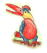

|
| Todas las glorias a Sri Caitanya Mahaprabhu y a todos los devotos del Señor. Cuando llego el otoño, Sri Caitanya Mahaprabhu, decidió ir a Vrindavan. En un lugar solitario él le pregunto a Ramananda Raya y Swarupa Damodara cual seria la mejor forma para ir a Vrindavan... |
|  |
| Atras -----Home -----Adelante |